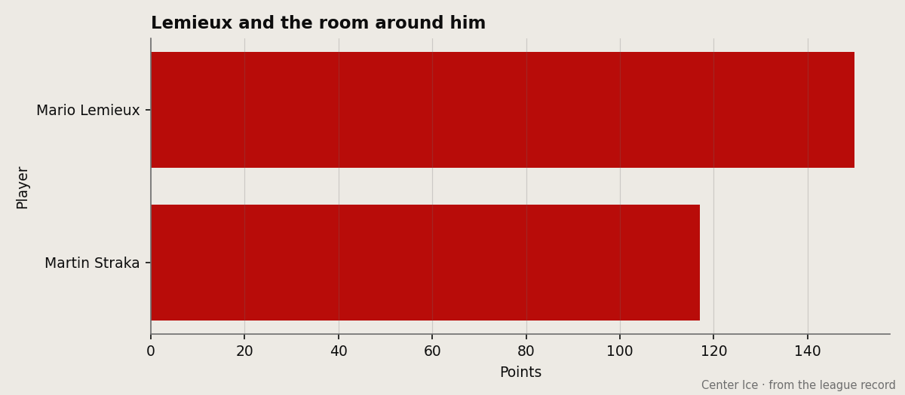

HE'S 39. HE'S THE BEST PENGUIN. THE ROOM IS 16 AND 26 AND THEY HAVE FIVE YEARS LEFT OF THIS.
Mario Lemieux is the only Penguin in the top 30 scorers. His Development Index is falling. The roster around him is a joke and you pay $79 to watch it.
 Mickey "The Mick" DonnellyColumnist, ex-goalie · The Penalty Box
Mickey "The Mick" DonnellyColumnist, ex-goalie · The Penalty Box
 Mario Lemieux88 is 39 years old. He has 82 points in 48 games. That is a 140 pace. He is 24th in the league. The only other Penguin anywhere near the top 30 is nowhere near the top 30.
Mario Lemieux88 is 39 years old. He has 82 points in 48 games. That is a 140 pace. He is 24th in the league. The only other Penguin anywhere near the top 30 is nowhere near the top 30.
 Pittsburgh Penguins are 16 and 26 and 7. Last in the Atlantic. 55 points. The Pittsburgh Penguins room has a club morale of 89.9, ninth-lowest in the league. Fourteen thousand in the building, $79 a seat, $51.77 million in revenue, and a team that cannot win a hockey game.
Pittsburgh Penguins are 16 and 26 and 7. Last in the Atlantic. 55 points. The Pittsburgh Penguins room has a club morale of 89.9, ninth-lowest in the league. Fourteen thousand in the building, $79 a seat, $51.77 million in revenue, and a team that cannot win a hockey game.

THE INDEX SAYS HE IS FALLING AND YOU STILL HAVE NO PLAN
The Bureau's Development Index has Lemieux at minus 1. His base grade of 92 is reading 88 today. He lost his rib sometime between January 19 and January 22 and was back on January 23, and the form line went negative. At 39. On $9.90 million with 5 years left on the contract. And he is still the best man on the roster by a full four points over  Martin Straka86 at 85.
Martin Straka86 at 85.
The second-best forward on the team is  Aleksey Morozov78 at 78. The third is Eric Meloche78 at 77. This is what you have built around the first overall pick of 1984. A 78 and a 77 and a 66-year-old goaltender rotation that cannot stop enough pucks to make a 140 pace matter.
Aleksey Morozov78 at 78. The third is Eric Meloche78 at 77. This is what you have built around the first overall pick of 1984. A 78 and a 77 and a 66-year-old goaltender rotation that cannot stop enough pucks to make a 140 pace matter.
THE MATH ON YOUR $79 TICKET
Pittsburgh Penguins pays $44.95 million in salary. They make $51.77 million in revenue. The owner is $13.95 million ahead. Attendance is 14,062 and the ticket is $79. You are buying into the same product every night and the product is a man in his fourth decade doing everything himself because nobody else on the roster can be trusted to do anything.
Pittsburgh's penalty leader is  Adam Mair67 at 66 minutes. The team scores 191 goals in 57 games and allows 217. They are minus-26 on the season. They lost three straight before their last game. The streak column reads L1.
Adam Mair67 at 66 minutes. The team scores 191 goals in 57 games and allows 217. They are minus-26 on the season. They lost three straight before their last game. The streak column reads L1.
BLAME THE PEOPLE WHO BUILT THIS
A 39-year-old center on a five-year deal is an admission. Somebody in that front office looked at the Development Index, saw minus 1 on the only player who produces, saw a 61 potential grade, saw the second-best winger at 78, and decided to keep going. The owner banks $13.95 million. The ticket is $79. The room is the ninth-saddest in the league.
Lemieux told you who he is. 150 points last year. 82 in 48 this year. A 99 pass grade, a 98 deking grade, a 95 puck control. He is still the most complete player in a Pittsburgh Penguins sweater and he has been for twenty-one years. The problem is that nobody else in the building can play, and the people who signed the contracts think that is fine because the books balance.
You pay $79 to watch a man fight for his life every night and you will keep paying until he stops. And when he stops, there is nobody. Not Straka. Not Morozov. Not the kid with the 61 potential grade. Nobody. The Penguins have five years of this left on Lemieux's contract and no visible path to a second scorer.